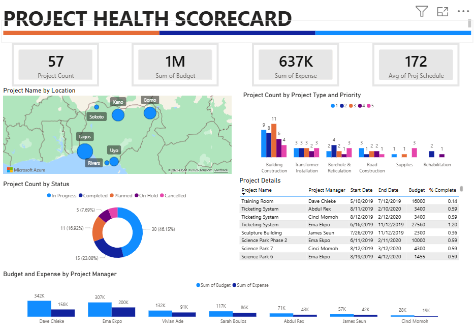

About Me
I am a self-driven professional focused on innovation and sustainability across engineering, technology, and business, with strong performance in international and cross-industry environments. An Erasmus Mundus META4.0 graduate, I bring academic and professional experience across France, Italy, Germany, Slovenia, Norway, China, etc., with hands-on experience at Siemens Mobility, Diageo, Deloitte, and start-ups in hovercars, green hydrogen, etc. My expertise includes Manufacturing, Process Optimization, Materials Engineering, Mechanical Engineering, Sustainability, LCA, Data Analytics, and Digital Transformation, applying Lean methodologies, modeling and simulation, KPI dashboards, GMP, process mapping, root-cause analysis, data-driven layout optimization, etc., across automotive, heavy manufacturing, pharmaceuticals, oil and gas, renewable energy, machining, rail infrastructure, and ESG-focused projects. I offer advanced sustainability capabilities in Life Cycle Assessment, digital twins, circular economy, renewable energy systems, ESG analysis, carbon footprint reduction, etc., supported by a strong digital toolkit including Python (Pandas, scikit-learn, TensorFlow), SQL, Power BI, Tableau, MATLAB, PLCs, CAD/CAM (CATIA, SolidWorks, Siemens NX), and simulation tools such as ANSYS, COMSOL, AnyLogic, OpenFOAM, etc. I bridge technical depth with strategic vision through rigorous analytics, data-driven decision-making, project management, and cross-functional communication, bringing a global perspective shaped by multicultural collaboration. Languages: English (Native), Mandarin Chinese (B2), Norwegian (B2), French and Italian (B1).
My Projects

High Temperature Processes
(Cold Spray)
This project demonstrates the Cold Spray deposition of Stainless Steel 316L onto an Aluminium 3000 series cylinder, achieving particle adhesion through optimized impact velocity and temperature while preserving substrate properties. The study utilized Conic Nozzle Software for simulating gas and particle parameters and Excel for analytical calculations of critical and optimal velocities to ensure high deposition efficiency.

Transverse Project in Manufacturing
(Powder Characterization, Laser Cladding, Belt Finishing, Ball Burnishing, Surface Topography Characterization)
This project investigates advanced manufacturing processes ranging from powder characterization and material deposition to surface finishing and topography evaluation, with the goal of understanding how processing parameters influence material behavior, surface integrity, and final component performance. The work utilized tools and techniques such as laser cladding, cold spray, belt finishing, ball burnishing, SEM, confocal and focus variation microscopy, microhardness testing, and data analysis software to characterize and optimize engineering surfaces for industrial applications.

Design and Manufacture of a Hip Prosthesis
This project explores the design, material selection, and manufacturing considerations of a hip prosthesis with emphasis on the femoral head surface and its biomechanical performance. It was developed using titanium alloy characterization data, machining techniques, surface metrology tools, and microstructural analysis methods.

Laser Engraving / Cutting
This project demonstrates laser engraving and cutting using a VLS 3.5 CO₂ system, applying Gaussian beam theory to understand focalization and material interaction. Photograv, Inkscape, and UCP software were used for image processing, vector preparation, and machine control.

Autodesk Fusion 360
Autodesk Fusion 360 modeling of a 90° flanged elbow, compound spur gear, offset crank arm/bellcrank lever, yoke/clevis fork with offset arm, and L-bracket with shoulder bolt and washer.

SolidWorks
SolidWorks modeling of a 3-port valve body (Y-valve housing), stepped transmission shaft with pulley and flange, 6-blade axial fan/propeller, curved offset bearing housing (pedestal mount), and connecting rod (conrod) with an offset big end.

Siemens NX
Siemens NX.

Autodesk Inventor
Autodesk Inventor.

Finite Element Analysis (FEA)
Finite Element Analysis (FEA).

Computational Fluid Dynamics (CFD)
Computational Fluid Dynamics (CFD).

Gas Turbine Blade
(Material Input & Sustainability)
This project focuses on selecting the optimal material for a high-pressure turbine blade using Granta EduPack and Ansys by evaluating thermal, mechanical, and durability constraints. It identifies IN-738LC as the best candidate, ensuring maximum creep resistance, fatigue strength, fracture toughness, and minimal weight while incorporating sustainability and eco-audit considerations.

Thermo-Calc Simulation
(Materials & Design)
The project models precipitation of Al₃Sc in aluminum alloys and cementite formation in steel, computing phase fractions, nucleation rates, precipitate sizes, and yield strength trends. Simulations were performed using Thermo-Calc’s equilibrium, precipitation, and DICTRA diffusion modules.

Electrospinning Technology
(Surface Science & Technology)
This project investigates the electrospinning fabrication technique for producing nanofiber mats and studies post-processing treatments and surface behavior of nanostructured materials. Experimental analysis includes process description, material morphology, and qualitative surface wettability via contact angle characterization.

Friction and Wear Testing
(Tribology)
The project involves experimental work focused on tribological testing methods and the influence of coatings and lubricants on friction, wear mechanisms, and surface performance.

Flexible Automation, Robotics and Artificial Intelligence (AI)
Modules 1 to 3 explore the integration of automation, machine learning, robotics, and artificial intelligence using Python, Jupyter Notebook, scikit-learn, and AI4EU platform tools, alongside robotics interfaces for the P-rob 2 manipulator. They cover data balancing and predictive modeling, robotic manipulation and task optimization, and AI-driven manufacturing systems that enhance efficiency, quality, safety, and sustainability through predictive maintenance, quality control, collaborative robots, digital twins, and edge AI.

Modelling and Simulation for Sustainable Manufacturing
This simulation study of automotive brake disc manufacturing using AnyLogic software and Discrete Event Simulation evaluated energy consumption, carbon footprint, throughput, and waste, highlighting areas for efficiency and sustainability improvements. The results show strong renewable energy usage, high production efficiency, and low scrap rates, while recommending quality control, resource optimization, and increased renewable energy integration to further enhance environmental and operational performance.

Master’s Research Thesis
Master’s Research Thesis in Sustainable Manufacturing for the Erasmus Mundus Joint Master Degree in Manufacturing 4.0 by Intelligent and Sustainable Technologies (META4.0), titled “Sustainability Assessment and Optimization of Aluminum Production for Electric Vehicle Manufacturing Using Life Cycle Assessment and Predictive Modeling.” The research evaluates environmental impacts across the aluminum production lifecycle and applies predictive modeling techniques to support data-driven optimization strategies for more sustainable electric vehicle manufacturing.

Ryanix ThermoAlert System
(Agentic AI)
The Ryanix ThermoAlert System is an intelligent, fully automated monitoring workflow that instantly detects critical machine conditions (like dangerously high temperatures) and triggers coordinated emergency responses across multiple channels to prevent equipment failure and minimize downtime. It uses n8n as the automation platform, an OpenAI chat model to intelligently process telemetry and generate tailored messages, and integrates Gmail, Google Calendar, Telegram, PagerDuty, and Discord for professional alerts, urgent scheduling, push notifications, high-priority incident creation, and seamless team communication, all with simple memory to maintain context between runs.

Life Cycle Assessment (LCA)
(Eco-Design)
This study assesses the environmental impacts of aluminum production for electric vehicle applications using SimaPro 9.3.0.2 for cradle-to-gate life cycle assessment with CML-IA Baseline, TRACI 2.1, and ReCiPe 2016 Endpoint methodologies. The findings show that energy-intensive processes like aluminum smelting drive emissions, and adopting renewable energy, improving efficiency, and recycling can significantly reduce the environmental footprint.

ESG Risk Analysis
This project provides an ESG (Environmental, Social, and Governance) risk analysis of S&P 500 companies, visualizing sector, industry, and company-level exposure to sustainability risks. The dashboard was developed using Power BI and leverages interactive charts and KPIs to support investors, corporations, and stakeholders in evaluating ESG performance and making informed decisions.

ESG Greenwashing Detection & Credibility Assessment System
The ESG Greenwashing Detection & Credibility System is a web-based tool that analyzes corporate sustainability claims by cross-referencing them against provided operational data, sector-specific benchmarks, country-level regulations, and grid carbon intensity to calculate an overall credibility score and identify potential greenwashing risks. It was built using HTML, CSS, JavaScript, Chart.js for data visualization, and Leaflet.js for interactive mapping.

Techno-Economic Assessment (TEA)
This study evaluates the technical performance and economic feasibility of a grid-connected solar photovoltaic system for a single-family house using PVsyst simulation software. The system’s energy output, efficiency, financial returns, and environmental impact were analyzed, demonstrating that it is technically efficient, economically viable, and environmentally beneficial, reducing CO₂ emissions while providing a short payback period and low levelized cost of energy.

Project Management Dashboard
This project analyzes project management performance in Nigeria from 2019 to 2020, providing insights into budget utilization, project health, completion rates, and operational efficiency across project types, locations, and managers. It was built using Power BI, Power Query, DAX, Excel/CSV, and Python for data cleaning, modeling, and visualization.

WhatsApp AI Chatbot
The WhatsApp AI Chatbot enables real-time, intelligent conversations on WhatsApp Business numbers by receiving messages via the Meta WhatsApp Cloud API, processing them with an AI model, and sending contextual replies. It uses n8n for workflow orchestration, OpenAI (or compatible LLMs) for smart responses, and integrates WhatsApp send/receive features to deliver 24/7 automated support while complying with Meta’s 24-hour messaging window and template rules.

Sales Report Dashboard
This project analyzes company sales performance, transforming raw sales data into interactive dashboards to visualize trends by product category, month, and geographic location. It was built using Power BI, Power Query, DAX, and Excel/CSV for data preparation, modeling, and visualization.
Web Marketing Dashboard
The Web Marketing Performance Dashboard analyzes digital and website performance by combining traffic sources, engagement, bounce rates, device usage, top pages, and geographic data to support campaign and UX decisions. Built in Power BI using DAX, Power Query, and Power BI Desktop, it draws from Google Analytics exports and CSV files.

Globe Insights Explorer
Globe Insights Explorer is a clean, interactive single-page web application that allows users to search any country and instantly view detailed geographic, demographic, and cultural information. It is built using HTML5, CSS3, and JavaScript, leveraging the REST Countries API with async/await, Fetch API, and dynamic DOM manipulation.

Movie Recommendation System
This project is a content-based movie recommendation system that uses machine learning and NLP to suggest similar movies based on genres and plot descriptions. It leverages Python, Pandas, NumPy, Scikit-Learn, feature vectorization, cosine similarity, and text-based machine learning models to generate recommendations.
Honours & Awards
- Best Student of the Year – Ordinary Level
- Best Student of the Year – Advanced Level
- Presbyterian Education Trust Bursary
- Beijing Government Scholarship
- Your Big Year Global Citizens Challenge Award
- Trustee International Scholarship, Wabash College, USA
- National Academic Quiz Tournament and Quiz Master Award
- Zhejiang SDG Global Summer School Scholarship, China
- Shanghai Government Scholarship, Donghua University, China
- UEA Postgraduate Sub-Saharan Africa Award, University of East Anglia, UK
- Global Youth Adaptation Summit Award
- Point Foundation BIPOC Scholarship
- Chinese Government Scholarship, Chongqing University of Posts and Telecommunications, China
- European Erasmus Mundus Scholarship (meta4.0), EU – France, Italy, Slovenia, Germany, and Norway
- Youth Leadership Award, UNESCO Global Citizenship Education Development (GCED)
Overall Skillset
| Project & Enterprise Systems | ERP (SAP, Oracle, IFS), STELLA, Trello, Asana, Confluence, Jira, Microsoft Project, PLM (Teamcenter, Windchill, ENOVIA), Process Documentation, Process Improvement, Workshop Facilitation, Project Coordination. |
| Data Analysis & Statistics | Power BI, Tableau, Spotfire, Grafana, Google Analytics, Adobe Analytics, R, MATLAB, Jupyter, Advanced Excel (VBA, Power Query), Data Science, Machine Learning, AI, Forecasting, Data Visualization, KPI Tracking, Reporting. |
| Programming Languages | SQL, JavaScript, C#, Python (Pandas, NumPy, Matplotlib, Seaborn, scikit-learn, TensorFlow, PyTorch), R, C++, Visual Basic, Visual Studio. |
| IT & Office Tools | Microsoft 365, Excel, PowerPoint, Word, Outlook, Teams, Visio, OneNote, Google Workspace, Adobe, Miro, Report Writing, Process Mapping. |
| Engineering & Simulation | ANSYS, ABAQUS, NASTRAN, Simulink, OpenFOAM, COMSOL, Fluent, STAR-CCM+, ASPEN Plus, gPROMS, HYSYS, Thermo-Calc, SimaPro, GaBi, OpenLCA, LabVIEW, ImageJ, HVAC Simulation. |
| CAD & CAM Tools | AutoCAD, SolidWorks, CATIA, CREO, Siemens NX, Inventor, Fusion 360, Rhino 3D, Onshape. |
| Quality & Compliance | GMP, GDP, QA, QC, Root Cause Analysis, SPC, Six Sigma, Lean, 5S, Kaizen, VSM, Lean Manufacturing, Risk Management. |
| Manufacturing Systems | SAP QM, SAP EWM, Oracle WMS, TrackWise, MES, Dynamics, MSA, Manufacturing Improvement. |
| Automation & Control | SCADA, n8n, Zapier, CRM, PLC (Siemens, Allen-Bradley), PID Optimization. |
| IT/OT & Virtualization | VMware, Azure, AWS, Google Cloud, PROFINET, Modbus, OPC UA, IoT, GitHub, Digital Industries, AR/VR, BMS. |
| Soft Skills | Communication, Collaboration, Problem Solving, Decision-Making, Stakeholder Engagement, Attention to Detail, Resilience. |